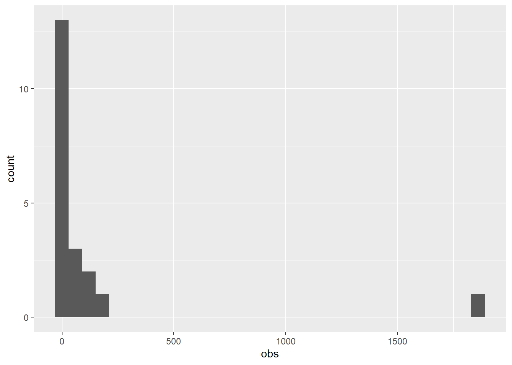
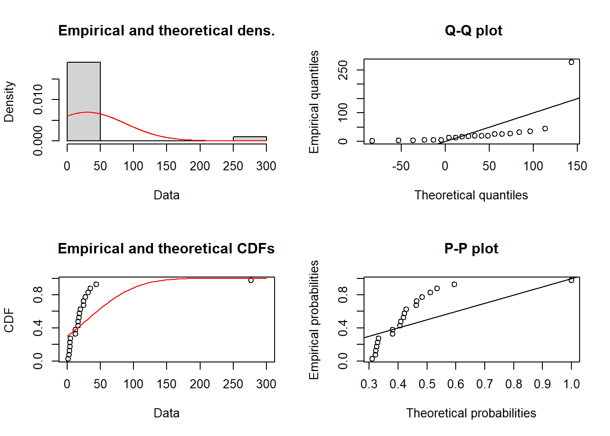
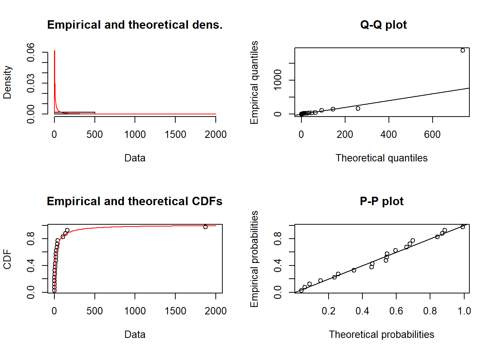
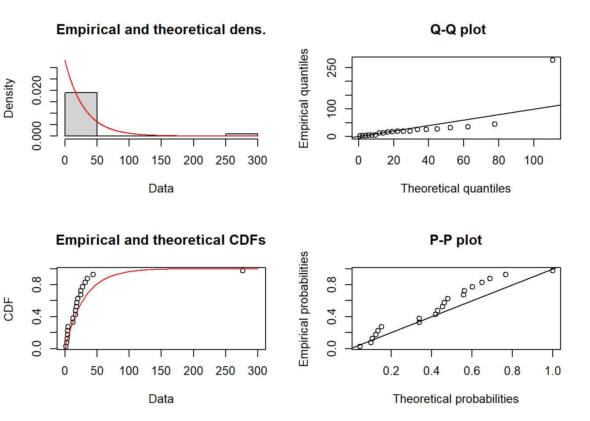
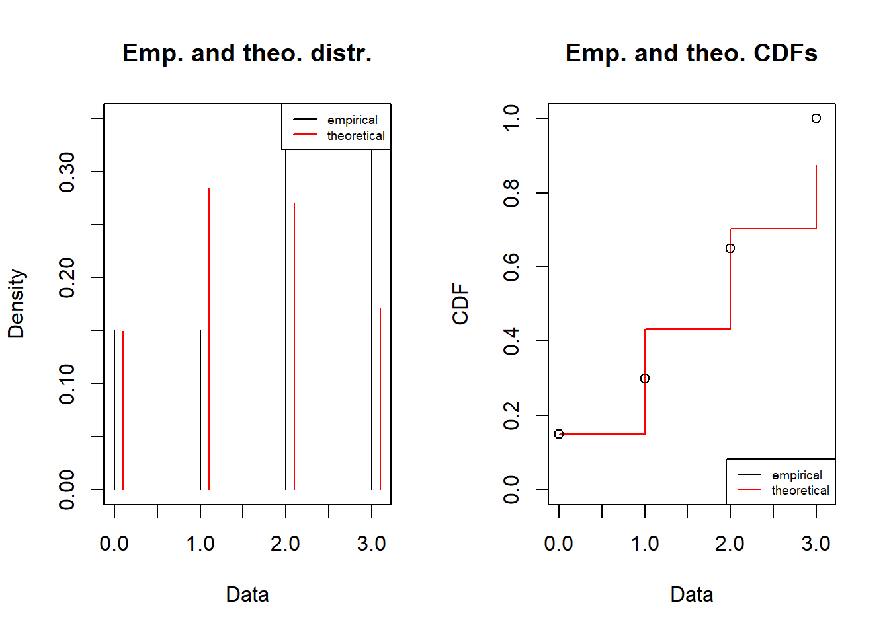
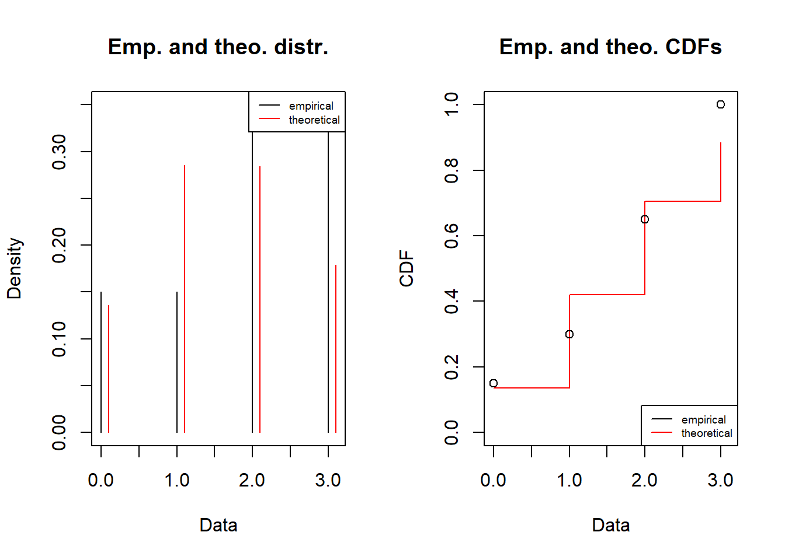
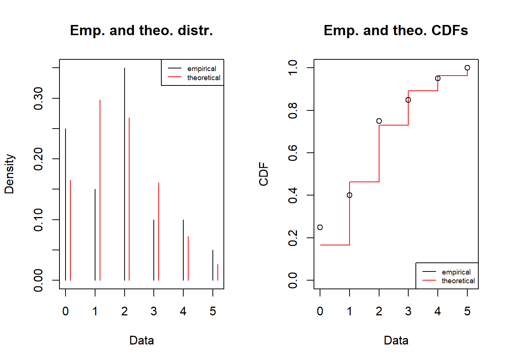
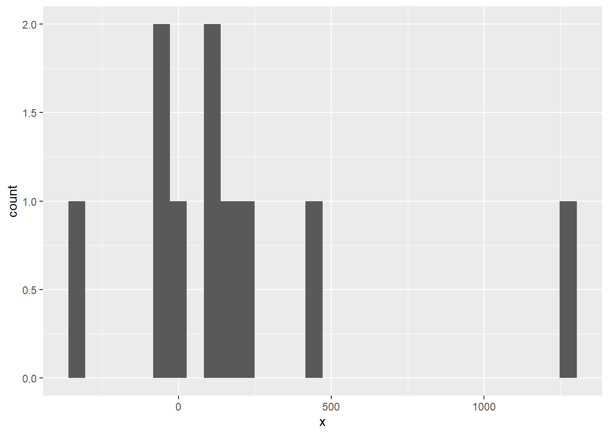

Observe, fit and simulate
MVEN10 Risk Assessment in Environment and Public Health
Exercise overview
We encourage collaboration
Reporting is individual
Background
Assessors often face the task to inform a model with available data.
The way data has been collected gives valuable information on how data is related to the quantity
Sample size, or rather the number of independent observations, should be large enough to establish a good fit.
Purpose
To find a suitable probability model (a probability distribution) for variability or measurement errors of a given random sample (repeated observations of he same thing), by
Estimating the model parameters using the information in the sample, and
Evaluate the goodness of fit of the model, and then
draw random numbers from the probability model (a probability distribution)
Content
Data sets collected by the students
Functions to fit a model to data and evaluate goodness of fit
Duration
60 minutes
Reporting
Write a report using a qmd document and upload it on the assignment in canvas. Instructions at the end of this page.
Choose data set
- Download the fill with all data sets and upload it in your project in the folder named data
Open the excel-file and see what it contains.
Load useful libraries for reading and plotting data
library(readxl)
library(dplyr)
library(ggplot2)- Read in data into a data frame named df and view it.
df <- read_excel(path="data/ex_obs_all.xlsx",sheet="data")
View(df)You are to use R to fit a probability distribution to the observations to two groups, one with discrete and one with continious observations.
Choose one of the columns to start with.
Decide if the data you have selected is continuous or discrete.
Below I refer to the column name for the chosen observations as obs. Note that I demonstrate the code on a different data set than yours.
This is my set of observations
df$obs [1] 0.6 127.5 3.2 152.4 35.6 5.1 9.0 15.1 353.4 57.2 4.6 5.7
[13] 53.4 2.4 32.7 22.2 25.6 72.9 11.4 104.6- Make a histogram of data.
Change binwidth to modify the smoothness of the histogram.
ggplot(df,aes(x=obs))+
geom_histogram(binwidth = 60)
Find a suitable model for data
We will find a suitable model for data by fitting a probability distribution to data.
A distribution that fits well to data AND that seems reasonable for that quantity can be seen as a suitable model to describe variability for the quantity and/or measurement error for observations of the quantity.
- Install the R-package fitdistrplus.
Note that this only needs to be done one time and you can do it in the Console.
install.packages("fitdistrplus")- Load the R-package fitdistrplus and ignore warnings
library(fitdistrplus)Fit a model
We will find a model by fitting alternative reasonable probability distributions to data and then compare the fitted distributions.
We will use a normal, lognormal and an exponential distribution as candidate models for the continuous quantity.
- Fit a normal distribution to data using the function fitdist
Tip
Note that you can type a question mark in front of a function in the Console to view the help for the function
fitnorm = fitdist(df$obs, distr = "norm")
fitnormFitting of the distribution ' norm ' by maximum likelihood
Parameters:
estimate Std. Error
mean 54.73000 18.08764
sd 80.89033 12.78989- Study goodness of fit by comparing the histogram and fitted PDF and Empirical and theoretical CDFs. Note that if your plotting window is too small, then use zoom to enlarge it.
plot(fitnorm)
- Fit data to a lognormal distribution and view the PDF, CDF and quantiles
fitlnorm = fitdist(df$obs, distr = "lnorm")
fitlnormFitting of the distribution ' lnorm ' by maximum likelihood
Parameters:
estimate Std. Error
meanlog 2.993866 0.3525367
sdlog 1.576592 0.2492806plot(fitlnorm)
- Fit data to an exponential distribution and view the PDF, CDF and quantiles
fitexp = fitdist(df$obs, distr = "exp")
fitexpFitting of the distribution ' exp ' by maximum likelihood
Parameters:
estimate Std. Error
rate 0.01827151 0.004073354plot(fitexp)
In addition to studying graphs, one can compare a measures of goodness-of-fit.
- Compare the goodness-of-fit measure AIC, where the lower AIC is the better.
fitnorm$aic[1] 236.4813fitlnorm$aic[1] 198.7228fitexp$aic[1] 202.0965 [1] 1 0 2 1 1 1 0 2 1 3 1 2 2 1 0 1 2 4 1 5We will use negative binomial, binomial and poisson as candidate distributions for the discrete quantity.
- Fit a negative binomial distribution to data using the function fitdist
Tip
Note that you can type a question mark in front of a function in the Console to view the help
fitnbinom = fitdist(df$obs, distr = "nbinom", discrete=TRUE)
fitnbinomFitting of the distribution ' nbinom ' by maximum likelihood
Parameters:
estimate Std. Error
size 55207.862109 NaN
mu 1.550031 0.2783976- Plot the fitted distribution and compare to data. Note that the plotting looks different from discrete data.
plot(fitnbinom)
- Fit a binomial distribution to data
Note that in order to use the binomial you need to fix the number of trials and suggest a starting value for the probability to succeed in one trial.
In the code below, the binomial model is fitted using quantile matching estimation, and that is why we also provide two quantiles (probs) as input arguments to the function. The size parameter corresonds to the number of indpendent trials, and you can modify that to be smaller och larger integer.
fitbinom = fitdist(df$obs, distr = "binom", discrete=TRUE, start= list(size = 20, prob = mean(df$obs)/20), method = "qme", probs = c(0.25,0.75))
fitbinomFitting of the distribution ' binom ' by matching quantiles
Parameters:
estimate
size 20.0000
prob 0.0775plot(fitbinom)
- Fit a poisson distribution to data
fitpois = fitdist(df$obs, distr = "pois", discrete=TRUE)
fitpoisFitting of the distribution ' pois ' by maximum likelihood
Parameters:
estimate Std. Error
lambda 1.55 0.2783881plot(fitpois)
In addition to studying graphs, one can compare a measures of goodness-of-fit.
- Compare the goodness-of-fit measure AIC, where the lower AIC is the better.
fitnbinom$aic[1] 65.27428fitbinom$aic[1] 65.35641fitpois$aic[1] 63.27428- Choose the best model and justify your decision
Simulate
At this point you have a model for a quantity that is either a continuous or a discrete variable.
Now you are to simulate from the continuous model and visualise the results. Simulation is done by generating random numbers from the chosen probability distribution.
- Sample 10 000 random values from your choice of the best model.
Here is a code how to sample ten values from a fitted normal distribution.
- The parameters of the fitted distribution is found by typing $estimate after the fitted object. For a normal it is:
fitnorm$estimate mean sd
54.73000 80.89033 - use the function rnorm to sample niter = 10 values
niter = 10
rnorm(niter,fitnorm$estimate["mean"],fitnorm$estimate["sd"]) [1] -41.30346 181.41220 156.09425 -145.88588 77.08696 -72.86099
[7] 122.91766 46.91979 154.93394 32.86736- sample and plot as a histogram.
Here is a code how to do it for the normal distribution.
data.frame(x=rnorm(niter,fitnorm$estimate["mean"],fitnorm$estimate["sd"])) %>%
ggplot(aes(x=x)) +
geom_histogram()
Report
Prepare a report including:
your name
your choice of the two data sets
your chosen models
include your justification
- refer to if the data is for a continuous or discrete quantity
- the goodness-of-fit measured by AIC in comparison to alternative models
- a graph comparing the histogram with the PDF of the fitted model and the empirical and theoretical CDFs
a histogram visualising a random sample of 10 000 values from the quantity
Use this template for the report